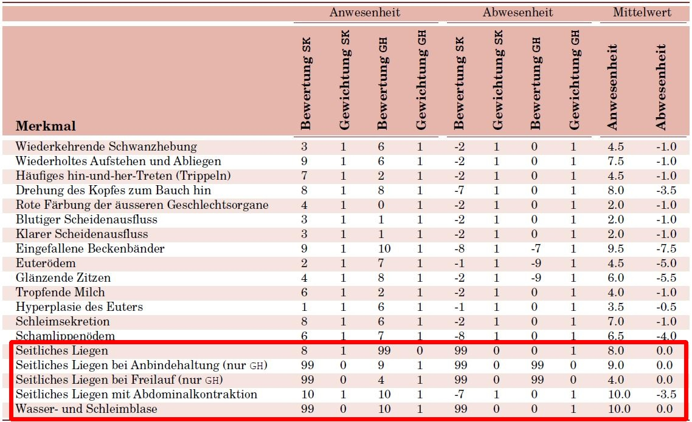

Automatische Analyse von Kamerabildern zur Prognose des Geburtszeitpunkts von Kälbern
Präsentation Bachelor Thesis
Dominique Müller
Inhalt
- Ausgangslage und Motivation
- Methodisches Vorgehen
- Domänenanalyse
- Lösung
- Umsetzung
- Resultate
- Ausblick
Ausgangslage und Motivation
"Schwere" Geburten: wirtschaftliche Konsequenzen und Beinträchtigung des Wohlergehens der Tiere
Optimales Management
Ziele
- Aufwand für die Überwachung des Geburtsverlaufs reduzieren
- Automatische Analyse von Kamerabildern
- Arbeit auf Basis von geometrischen Mustern und visuellen Merkmalen.
- Sichere Entfernung zu den Tieren
Methodisches Vorgehen
- Domänenanalyse zur Gewinnung von Expertenwissen
- Domain Driven Design
- Bewährte Methoden des Software Engineerings
Domänenanalyse

Lösung

TraitRecognitor:
Übersicht

Originalbild

Resultat
TraitRecognitor:
Binärbild
Originalbild
- inRange()
- bitwise_or()
Lampe und Holz weiss
TraitRecognitor:
Unwichtige Bereiche
Lampe und Holz weiss
- findContours()
- drawContours()
- minEnclosingCircle()

Unwichtige Bereiche
TraitRecognitor:
Winkel
Unwichtige Bereiche
- Winkel der Lampe messen
- Winkel der Konturen bereinigen
- Winkel im Wertebereich [70°; 110°]

nach Winkel gefiltertert
TraitRecognitor:
Extent
nach Winkel gefiltertert
Nach Winkel und Extent gefiltert
TraitRecognitor:
Aspect Ratio
Nach Winkel und Extent gefiltert
-
AspectRatio > 1.5

Nach Winkel, Extent und Aspect Ratio gefiltert
Resultate

Resultate
- Domänenanlyse
- Modellierung
- Entwicklung
Ausblick
- Vorstufe zu einem auf Machine-Learning-Algorithmen basierenden System
- Nachgelagertes Benachrichtigungssystem
Fragen?
Vielen Dank für Ihre Aufmerksamkeit!